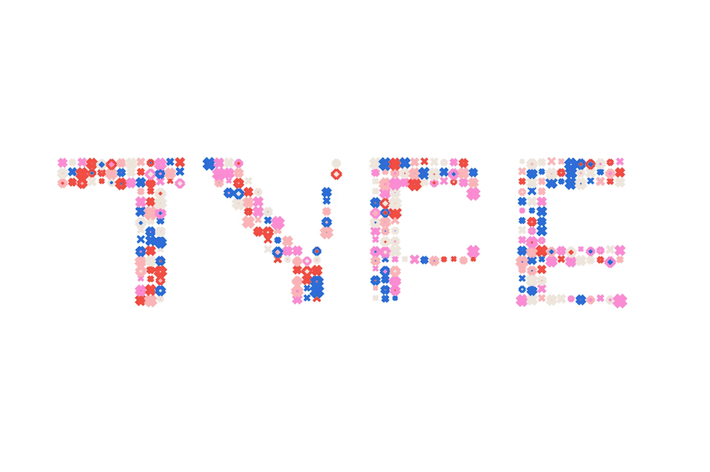

ADITI
NETIAN
type + face
is an experimentation that delves into dynamic, responsive and kinetic typography.
experimental typography,
generative design,
interaction design
LASALLE College of the Arts
2023
WORKSHOP
The focus was on typography as an output informed and transformed by code and change over time. We experimented
with type from a micro view, the vertex point, to the larger view of a letter’s shape to the topology of words.
OUTCOME 1
facetype is an experimentation that delves into dynamic, responsive and kinetic typography.
Based on the position of the face (using PoseNet), each letter in the word is distorted and different stroke
weights and heights are ascribed to different parts of the letter. You can type in whatever word you'd like,
too.
OUTCOME 2
shapetype. is also an experimentation that delves into dynamic, responsive and kinetic typography. Inspired by
modular typography that makes use of grids to create a system, this version of the mini-project allows for type
that is formed by modules that stay in the same place, but appear and disappear according to the dynamic letter
it supports.
A little bit Midsommar-ish, this is a fun breath of fresh air that you can stare at and play with for as long as
you’d like!


functionditi@gmail.com
+65 96100952
© Aditi Neti 2023